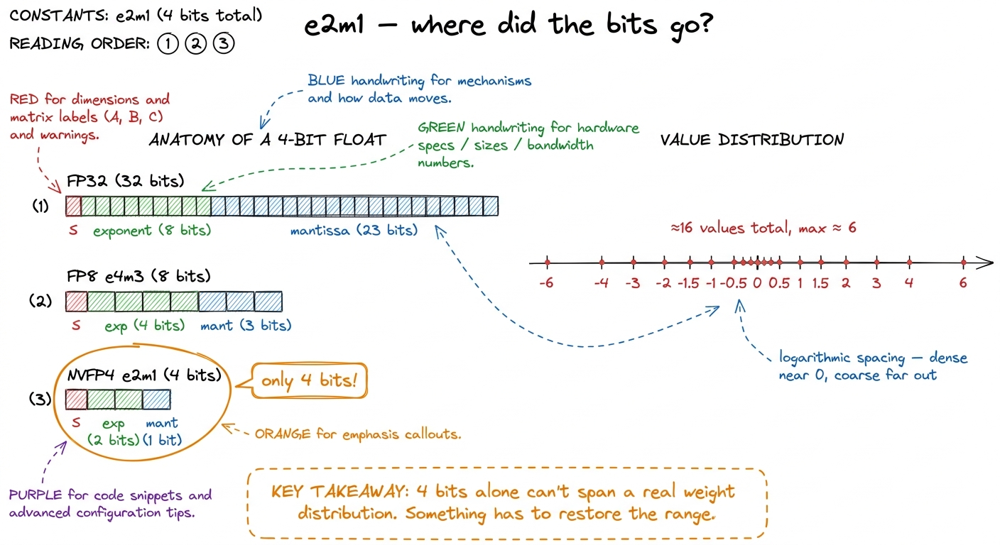
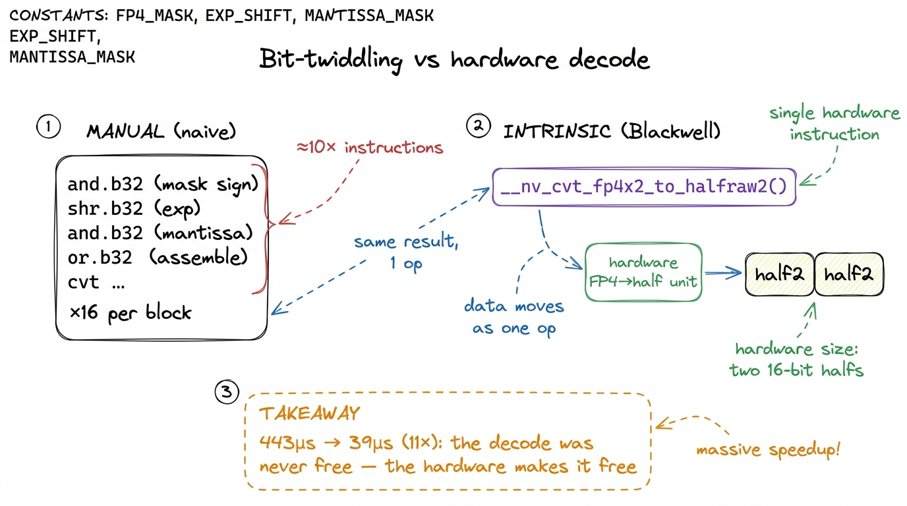
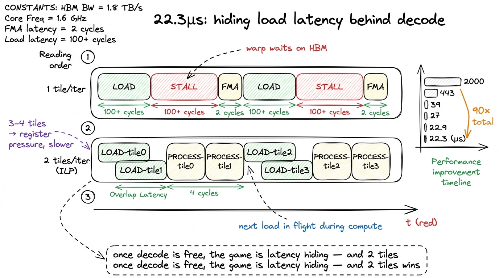
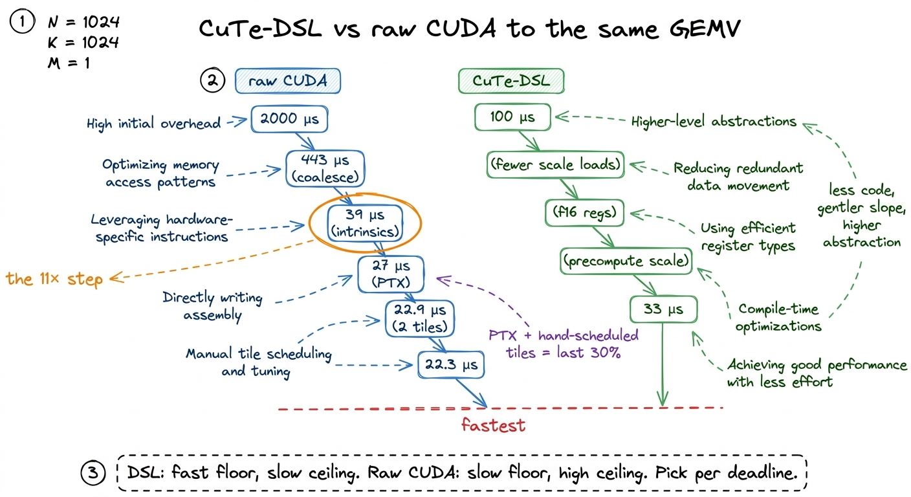
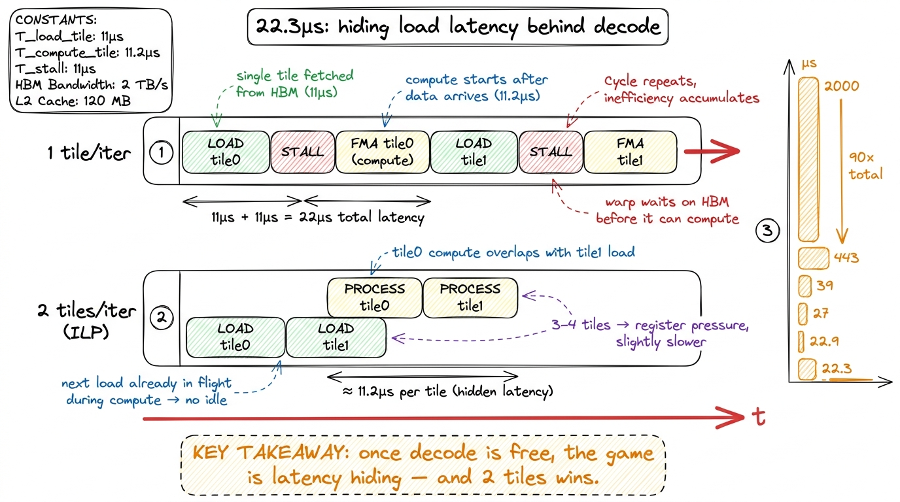
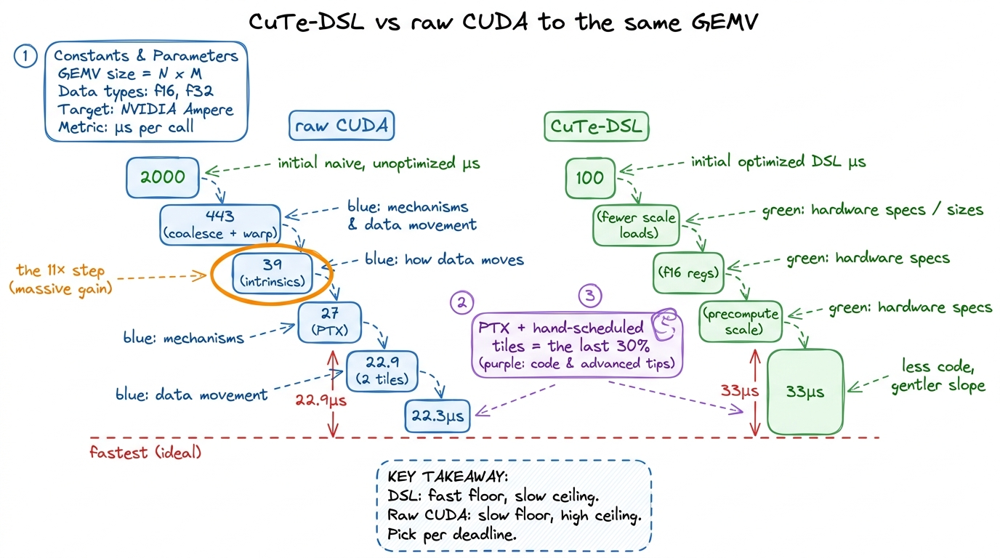

NVFP4 & microscaling formats NVFP4
Every generation of GPU buys speed the same cheap way: by moving fewer bits. FP32 gave way to FP16, FP16 to BF16, BF16 to FP8, and each halving of the numbers roughly doubled the tensor-core throughput the silicon could hand you for the same die area and the same watts. Blackwell takes the next step down, and it is a strange one. The format is called NVFP4, and it is a four-bit floating-point number. Four bits. Sixteen possible values. On its own it cannot represent the weights of a neural network at all — not even close.
So before we write a single line of kernel code, we have to answer the question this whole article is built around: how can a number so coarse it can't store your data possibly make anything faster — and what does the kernel have to do to cash in that speed? The short answer is that NVFP4 never works alone. It is a microscaling format, and once you see the trick, the rest of the article is one long worklog watching a real kernel climb from 2000 microseconds down to 22.3 — a 90× improvement — with almost none of it coming from where a beginner would guess.1 The worklog this article rebuilds is Yue Zhang's Blackwell NVFP4 kernel hackathon journey (2025). The numbers, the intrinsic names, and the ordering of the wins are all from that writeup; the voice, the by-hand math, and the figures are ours.
I'll build the whole thing from scratch. If you've never touched a low-precision format, start here — you'll keep up.
First, what does "four bits" even mean?
Let's not hand-wave. A normal 32-bit float has 1 sign bit, 8 exponent bits, and 23 mantissa bits. The exponent sets the scale of the number (is it near 0.001 or near 1000?), and the mantissa fills in the detail within that scale. Drop to 16 bits and you keep the idea but shrink the parts. Drop to 8 bits (FP8, the e4m3 layout) and you have 1 sign, 4 exponent, 3 mantissa — already so coarse that people quantize carefully.
Now drop to four bits. NVFP4 uses the layout e2m1: 1 sign bit, 2 exponent bits, 1 mantissa bit. Two exponent bits give you four gross scales; one mantissa bit gives you exactly two rungs inside each scale. Add the sign and you get roughly sixteen distinct values, spaced logarithmically, and the largest magnitude they reach is about 6.
Sit with how tiny that is. Your entire number line is {0, ±0.5, ±1, ±1.5, ±2, ±3, ±4, ±6} and a couple of near-zero rungs. If a layer's weights range from -0.02 to 0.31, every one of them rounds to almost the same coarse bucket. You have thrown the data away. This is the surprise we have to resolve: a format this crude is obviously useless — and yet Blackwell's fastest matmuls run on it in production. Something is missing from the picture.

figure rendering · A four-bit float has sixteen values topping out near 6. On its own thaThe missing piece: one scale per tiny block
Here is the whole idea, and it is beautiful in how little it asks for.
Don't store one scale for the entire tensor. Store one scale for every small block of values. In NVFP4 the block is 16 elements, and each block carries its own FP8 scale factor in the e4m3 layout.2 The reference kernel's scale factors are specifically e4m3fnuz — the "fnuz" variant has no infinities and only a single (negative) zero, which frees up an extra exponent code for magnitude. The exact FP8 flavor matters when you pick the decode intrinsic: get the wrong one and your dequantized values are silently off by a factor. So the actual number you reconstruct is:
real_value = fp4_value × fp8_block_scaleThe four bits carry the shape of each number relative to its neighbors in the block. The eight-bit scale carries the magnitude of the whole block. Sixteen coarse values riding on one shared, finer exponent. That's it. That's microscaling — "MX" for short.
Watch it rescue our failing example by hand. Say a block of 16 weights all live around 0.02 to 0.08. Pick the block scale so the largest, 0.08, maps near the top of the FP4 range — say scale ≈ 0.013, so 0.08 / 0.013 ≈ 6, which FP4 can represent. Now every weight in the block, divided by 0.013, lands somewhere on the FP4 number line with real resolution. The next block might live around 3.0 to 6.0 and pick a scale near 1.0. Same four-bit codes, totally different magnitude — because each block brought its own exponent. The dynamic range you thought you threw away comes back, one block at a time.

figure rendering · Sixteen four-bit values share one FP8 scale. The four bits carry the sThe napkin math that says this is worth it
Now the part that tells us why a kernel engineer cares. Count the bytes for one block of 16 elements:
- 16 values × 4 bits = 64 bits = 8 bytes
- 1 FP8 scale × 8 bits = 1 byte
- Total: 9 bytes for 16 elements → 4.5 bits per element.
Compare to BF16 at 16 bits per element. NVFP4 moves about 3.5× fewer bytes for the same tensor. And here's the load-bearing fact: on a bandwidth-bound kernel — one where the GPU spends its time waiting on memory, not on math — moving 3.5× fewer bytes is directly 3.5× less time waiting, if and only if you don't add new work to unpack those bytes. Whether the decode is free is the entire story. Hold that thought; it's about to become the plot.
If "bandwidth-bound" isn't yet a reflex for you, the three regimes article is the one-paragraph version: every kernel is bound by compute, by memory bandwidth, or by latency, and you optimize a different thing in each. A GEMV — which is what we're about to build — is memory-bound in essentially every case, and knowing that up front tells us what "success" will look like before we write a line.
The workload: a batched GEMV, and why it's memory-bound
Let's pin down exactly what we're computing, because the shape decides everything.
The problem is a batched GEMV — matrix times vector, done for a batch. Concretely:
AisM × K × L, stored K-major, in NVFP4.Bis1 × K × L, stored K-major, in NVFP4 — note the leading 1:Bis a vector per batch, not a matrix.- Scales
sfa(M × (K/16) × L) andsfb(1 × (K/16) × L) are FP8, one scale per 16-element block alongK. - Output
CisM × 1 × L, in FP16. - We contract over
Kand keep the batchL.Kis divisible by 64.3 The kernel hard-codesTILE_K = 128,THREADS_PER_ROW = 32(one warp per output row), andROWS_PER_BLOCK = 8. None of these are auto-tuned per problem shape — a place a more thorough tuner could still squeeze a little more, but not where the big wins live.
Why is this memory-bound "by construction"? Because a matrix-vector product has almost no data reuse. In a matrix-matrix GEMM you load a tile of A once and multiply it against many columns of B, so each loaded byte does lots of flops — you can become compute-bound. In a matrix-vector product there is only one vector. Each element of the giant A matrix gets read, multiplied by exactly one element of B, and added into an accumulator. One load, one multiply-add, done. The arithmetic intensity is on the floor. You are, unavoidably, streaming A past the chip as fast as HBM allows and doing a trickle of math on the side.

figure rendering · A GEMM reuses each loaded tile across many columns and can become compSo our prediction, before any code: this kernel lives or dies on bytes moved and on nothing getting in the way of the load pipe. NVFP4 hands us the 3.5× byte reduction for free. The kernel's only job is to not squander it.
Kernel 0: the naive start, and 2000 microseconds
The naive kernel does the obvious, honest thing, and it pays dearly.
It reads the packed uint8 bytes (two FP4 values per byte). For every four-bit value it reconstructs the float by hand: mask off the sign bit, shift out the two exponent bits, pull the mantissa bit, reassemble a half-precision bit pattern, then do the same bit-surgery on the FP8 scale, multiply the two, accumulate. It is completely correct. It runs at 2000 µs.
Why so slow, when we're supposedly moving so few bytes? Because every one of those hand-written shifts and masks is a real instruction, and there are billions of them. We saved on bytes and then spent all our savings — and more — on integer arithmetic to undo the packing. This is the first appearance of the theme: the byte savings are worthless if the decode isn't free.
There's also a plain, boring problem underneath: the naive kernel doesn't read memory in a friendly pattern, and it makes one thread grind out a whole dot product alone. So the first win is the dullest one, the same one taught everywhere else on this site.
Kernel 1: coalesce the loads, share the work — 443 µs
Two fixes, both structural, neither about NVFP4 specifically.
First, coalesce the global loads. When 32 threads in a warp ask for memory, the hardware is happiest if they ask for 32 contiguous addresses — it fuses them into a few wide transactions instead of 32 scattered ones. (The memory coalescing article is the from-scratch version.) We arrange the packed bytes so a warp reads a contiguous run, and we use vectorized 16-byte (float4) loads so each thread grabs a fat chunk at once.
Second, share the work across the warp. Instead of one thread computing an entire output row's dot product over all of K, we put 32 threads on one row — each lane accumulates a slice of the K dimension, and then a shuffle-based tree reduction sums the 32 partials into the final answer.4 This is the same warp-collaboration pattern as a reduction kernel: 32 lanes each own a stripe of K, then a log-step shuffle sum combines them. It's completely orthogonal to the decode work, but it has to be in place first — otherwise the decode optimizations have no efficient loop to speed up.
Together these drop the kernel from 2000 µs to 443 µs. A 4.5× win, and we haven't touched the four-bit problem yet. But now the profiler stops complaining about memory patterns and starts pointing somewhere specific and slightly embarrassing.
Kernel 2: the 11× win — stop twiddling bits by hand
Here's the hypothesis that reshaped my whole mental model of this kernel.
I profiled the CUDA kernel side by side with a reference CuTe-DSL version doing the identical math, and the CUDA code was issuing roughly 10× more instructions for the same work. Stop and feel how strange that is. This kernel is memory-bound. It's supposed to be waiting on HBM. Why would instruction count matter at all?
Because the warp isn't only waiting — it's also busy decoding. All those hand-written masks and shifts to turn e2m1 and e4m3 bytes into halfs compiled into long chains of integer ALU ops. The load pipe was ready to hand over the next bytes, but the warp couldn't accept them fast enough because it was still unpacking the last batch. The memory-bound kernel had grown an instruction-bound bottleneck inside it. That's the thing to internalize: on a low-precision kernel, "decode cost" is a hidden second bottleneck that can eat the entire byte savings.
The fix is that Blackwell has a hardware unit for exactly this decode. There are dedicated conversion intrinsics that take packed low-precision bytes straight to half-precision in a single instruction:
// Decode two packed NVFP4 (e2m1) values -> two halfs, in ONE op.
__half2_raw two_fp4 = __nv_cvt_fp4x2_to_halfraw2(packed_fp4x2, __NV_E2M1);
// Decode one packed FP8 (e4m3) scale -> one half.
__half_raw scale = __nv_cvt_fp8_to_halfraw(packed_fp8, __NV_E4M3);Look closely at the first one. __nv_cvt_fp4x2_to_halfraw2 converts two NVFP4 values at once into an __half2 — a pair of halfs living in one 32-bit register. What was a dozen integer instructions per value becomes one hardware conversion per pair.5 The storage types __nv_fp4x2_storage_t and __nv_fp8_storage_t are the typed handles you feed these intrinsics — thin wrappers over the raw bytes so the compiler routes them to the conversion unit rather than to generic integer ALUs. Swapping the hand-rolled bit-twiddling for these two intrinsics collapses the instruction count and drops the kernel from 443 µs to 39 µs — an 11× improvement from a change that made the source code shorter.
That's the emotional center of the whole worklog. The biggest single win, on a memory-bound kernel, came from writing less code, because the code we deleted was fighting the hardware for a job the hardware already does in one instruction.

figure rendering · The naive kernel reconstructed every four-bit value by hand in a dozenKernel 3: squeezing the last order of magnitude
At 39 µs the decode is basically free, so — as always — the bottleneck moves. Now it's load latency (the warp still has to wait for bytes to arrive from HBM) and instruction scheduling (how tightly the convert-scale-accumulate steps pack together). Three refinements take us the rest of the way, and each is a small, measured step. This is the worklog rhythm at its purest: change one thing, profile, keep the number if it dropped.
3a. PTX for the fused multiply-accumulate — ~27 µs
Even with the intrinsics, the compiler was emitting the conversion, the scale-multiply, and the accumulate as separate instructions, packed sub-optimally. So I dropped to inline PTX — the assembly-ish layer just above SASS, see PTX vs SASS — and hand-fused the whole per-block sequence: convert the packed pair with cvt, apply the block scale, and run an fma.rn.f16x2 chain across the packed elements, keeping everything in f16x2 so every op processes two values at once.6 f16x2 means "two halfs packed in one 32-bit register." Almost every op in the inner loop is a .f16x2 variant precisely because the vector width is 2 — which is exactly why decoding to __half2 in the intrinsic step lines up so cleanly with the FMA step. The whole pipeline is built to move in pairs. This trims 39 µs to about 27 µs.
3b. Two tiles per iteration — ~22.9 µs
Now the subtle one, and the most instructive. With a single tile of work per loop iteration, there's a hard dependency: the FMA on this tile's data cannot begin until this tile's load returns from HBM. So the warp issues a load, then stalls with nothing to do while the bytes travel across the memory bus, then finally computes. The compute unit sits idle exactly as long as the memory takes.
The fix is instruction-level parallelism by hand. Process two tiles per iteration: issue tile 1's loads before consuming tile 0. Then, while tile 0's decode-and-FMA runs, tile 1's bytes are already in flight across the bus. By the time tile 0's math finishes, tile 1's data has arrived and its math starts immediately. The load latency is hidden behind the compute instead of sitting in front of it. This is software pipelining, done manually.
// ILP: overlap the next tile's load with this tile's compute.
load(tile0); // A, B packed bytes + FP8 scales
load(tile1); // issued BEFORE tile0 is consumed -> travels in parallel
process(tile0); // decode + scale + fma; meanwhile tile1's bytes are in flight
process(tile1); // its data has already arrived — no stallThis drops us to about 22.9 µs.
The surprise: three tiles was slower
I expected the pattern to continue — if two tiles hide latency, surely three or four hide more. I was wrong. Three and four tiles per iteration came out slightly slower.
Why? The honest answer is partly a hypothesis I couldn't fully confirm. More tiles in flight means more live half-registers held simultaneously. The likely culprit is register pressure: past two tiles, the compiler starts reusing registers in ways that reintroduce load stalls, or occupancy quietly drops.7 The author's honesty, which I'm keeping: profiling showed register counts and occupancy essentially unchanged between the two-tile and three-tile versions, so "register pressure" is the best hypothesis, not a proven cause. Sometimes the profiler doesn't hand you the smoking gun and you keep the config that measured fastest. That's real kernel engineering, not a failure of it. Whatever the exact mechanism, two tiles was the sweet spot — enough to hide the latency, not so much that the register file revolts.
3c. Aggressive PTX fusion — 22.3 µs
A last pass of hand-scheduling the PTX even more tightly landed the final submission at 22.3 µs — a 90× speedup over the 2000 µs start. Trace where it came from: 4.5× from coalescing and warp collaboration, then a giant 11× from the hardware decode, then a final ~1.75× from PTX fusion and two-tile pipelining. Almost all of the drama is in that middle step — making the four-bit decode disappear into hardware.

figure rendering · The last order of magnitude is pure scheduling: overlap the next tile'Two roads up the same mountain: CuTe-DSL vs raw CUDA
There's a second path worth naming, because it tells you what writing these formats will feel like going forward.
Alongside the raw-CUDA kernel, I kept a CuTe-DSL version. CuTe is the CUDA Templates layout-and-tiling abstraction, here exposed through a Python-flavored domain-specific language (see CuTe-DSL & TileLang). Starting from a template, it began at about 100 µs, and with a handful of refinements it reached roughly 33 µs. The refinements are the same ideas we found by hand, just expressed at a higher level: eliminate redundant scale-factor loads with selective indexing; store A/B in float16 registers instead of float32 to cut register pressure; compute each block's scale product once rather than per element; accumulate the raw elements first and apply the scale a single time at the end; and do the warp-collaborative partial-sum reduction through shared memory across 32 threads per row.
Now the honest comparison. The hand-tuned raw-CUDA path (22.3 µs) beat the CuTe-DSL path (33 µs) here. But look at what each cost. The DSL reached a respectable number with far less code and almost no bit-level fiddling. I only outran it because I was willing to write PTX and hand-schedule tiles — the last ~30% that the DSL's abstraction won't reach for you.8 The author's caveat, kept intact: the CuTe-DSL skill was brand new, learned during the hackathon. A fluent CuTe user might well close or even invert that gap. The lesson isn't "DSLs are slower" — it's "abstractions have a floor you hit fast and a ceiling you reach slowly."
That is the trade the entire frontier is built on. The DSL gives you a fast floor and a gentle slope: little code, quick to a good number, hard to squeeze the last bit. Raw CUDA plus intrinsics plus PTX gives you a slow floor and a high ceiling: every optimization is yours to find, and the reward for finding them is the best number on the board. Which one is right depends entirely on your deadline and how much of the last 30% you actually need.

figure rendering · Two implementations of the identical kernel. The DSL reaches a good nuWhy this is the frontier
Step back and read the shape of the climb, because the shape is the lesson.
This kernel was memory-bound the entire time — a GEMV always is — and yet the single biggest win, the 11×, came from reducing instructions, not from moving fewer bytes. That's the signature of low-precision formats, and it's counterintuitive enough to state plainly: the byte savings are handed to you by the format for free, but they are worthless unless the decode is also free, and "free" means a hardware conversion unit, not clever bit-shifting code. Reconstructing a four-bit float by hand is a category error on Blackwell. The silicon has a cvt for it, and your only job is to reach for it.
This is also where numerics and kernel engineering fuse into one skill. NVFP4 is not just "smaller numbers." It's a layout (16 values plus one shared FP8 scale), a decode (two conversion intrinsics), and a schedule (pipeline the loads so the pipe never idles). Get all three right and 4.5 bits per element turns into a real 90× on real hardware. Get any one wrong — twiddle bits by hand, or forget to overlap the loads — and the format's promise evaporates. The quantization kernels article covers the FP8 and INT4 cousins of this same three-part discipline.
And there's a next rung already visible. Everything above ran the dequantize-then-FMA dance on the CUDA cores. Blackwell's real party trick is that its tensor cores can consume these microscaling formats natively — the tcgen05 MMA instructions, Tensor Memory, and CTA pairs let the tensor cores read NVFP4 with its scales and do the matmul at far larger tile granularity without a separate decode step at all. That's the subject of Blackwell's tcgen05 & TMEM, and it's where these formats stop being a GEMV curiosity and become the throughput story of the whole chip.
But the habit is the same one from the three regimes, and it's the habit worth leaving with: predict the bound before you code, measure it, and when the profiler tells you a memory-bound kernel is somehow issuing 10× too many instructions — believe it, and go find the intrinsic that makes them disappear.